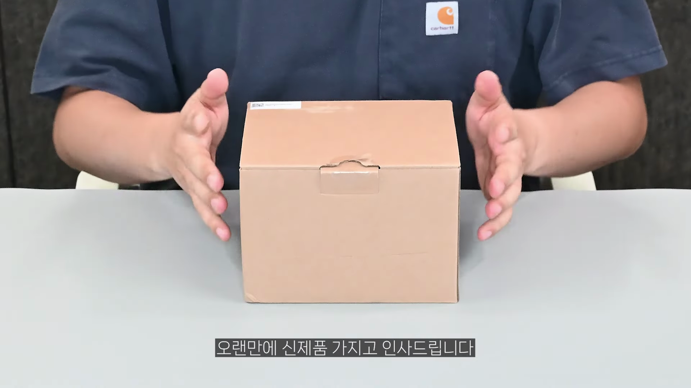
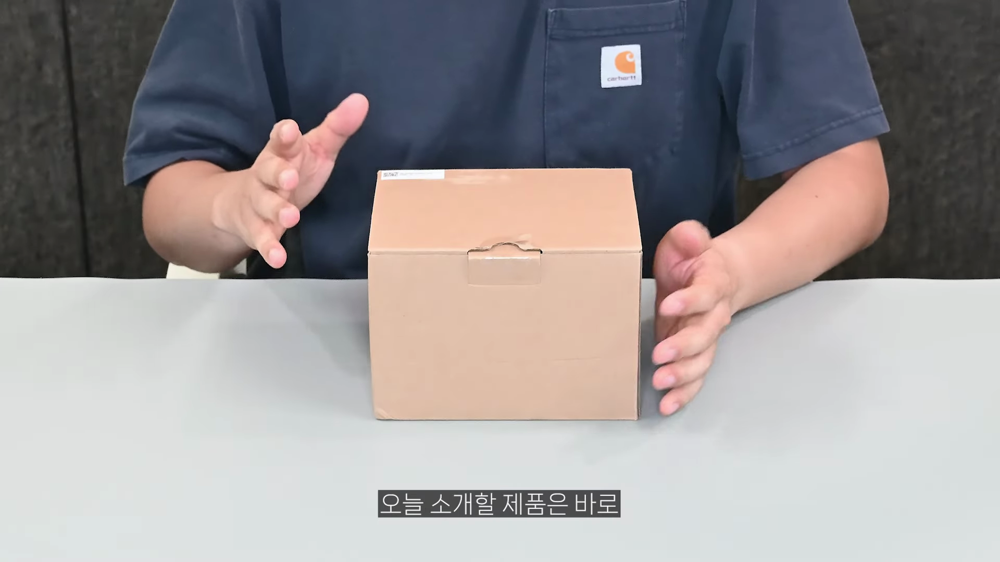
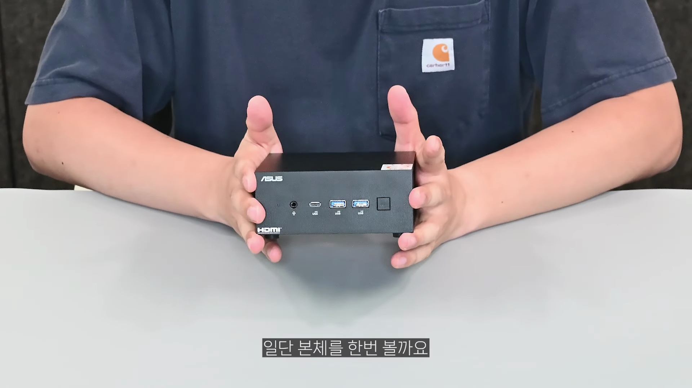
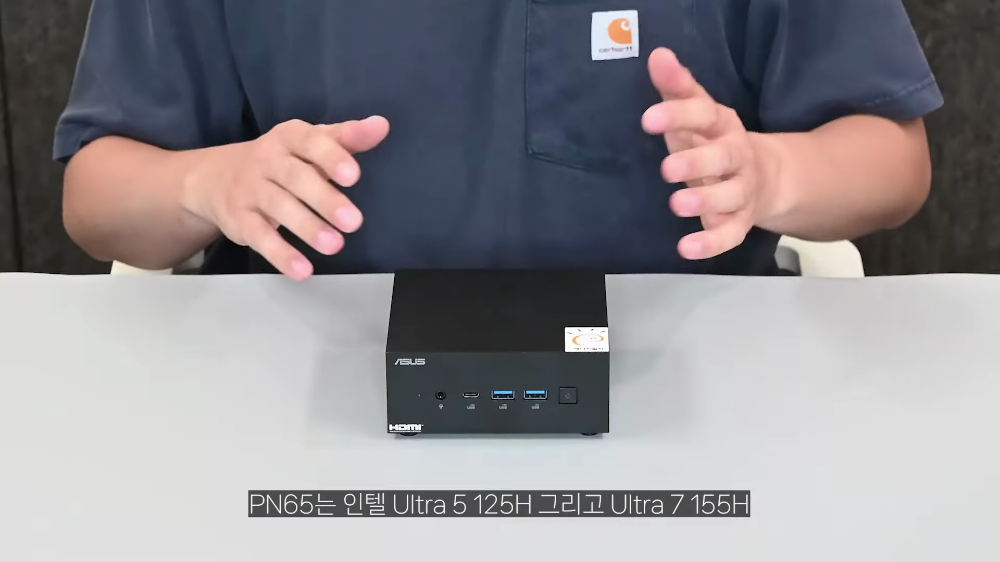
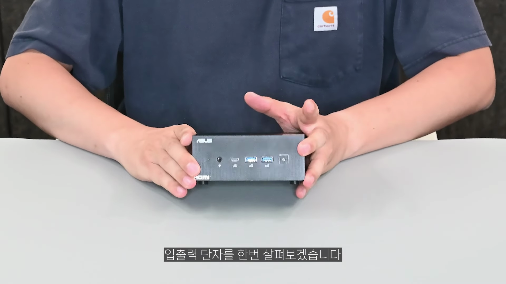
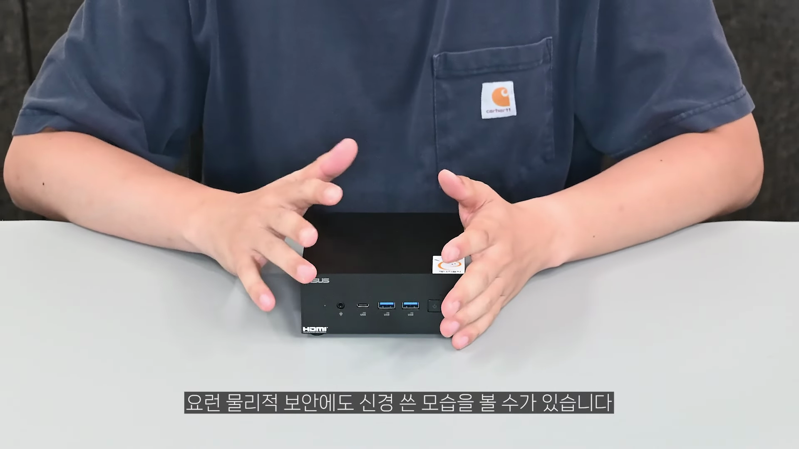
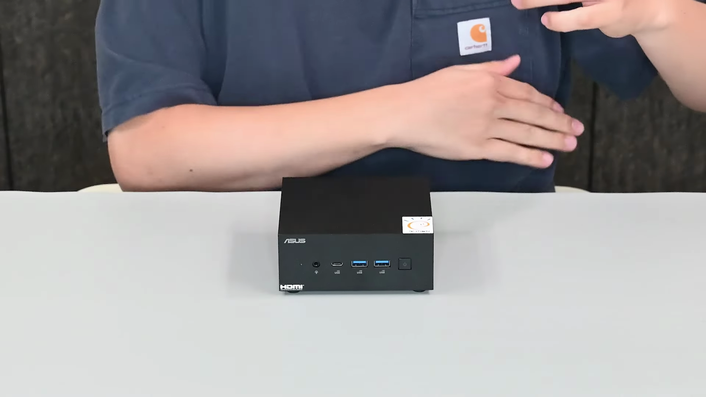
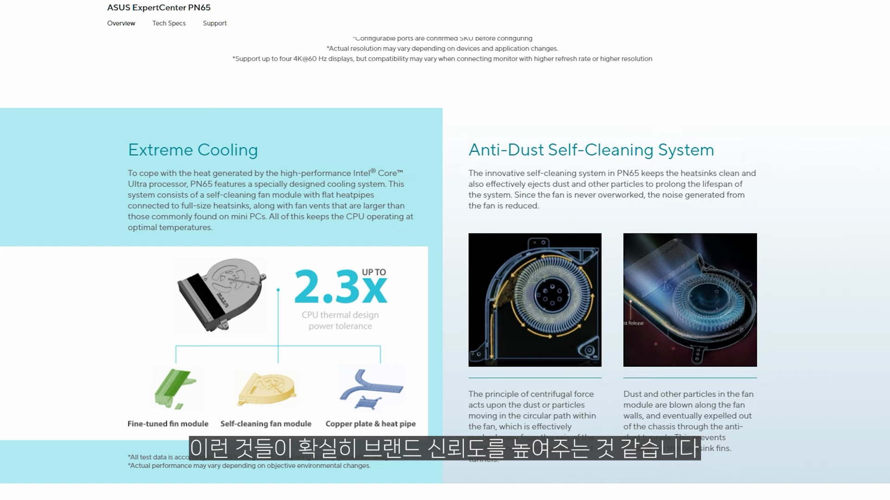

이번 포스팅에서는 에이수스의 최신 미니 PC, PN 65를 심층적으로 분석합니다. 인텔 울트라 CPU를 탑재한 이 제품의 특징과 성능을 살펴보며, 어떻게 크기에 대비해 뛰어난 퍼포먼스를 발휘하는지 알아보겠습니다. 
신제품 소개
에이수스 PN 65 미니 PC는 신제품으로 인텔 울트라 CPU가 탑재되어 출시됩니다.
- 에이수스 PN 시리즈의 최신 모델인 PN 65 출시
- 인텔 울트라 CPU 탑재
제품 패키징 및 구성품
현재 패키징은 샘플 형태이며, 정식 출시에는 변경될 것으로 예상됩니다.
- 출시 전 샘플로 무지 박스 포장
- 120W 어댑터 제공 가능성
디자인과 크기
제외적인 디자인은 계속해서 정사각형에 가까운 형태로 유지되고 있습니다.
- 기존 PN 64와 비슷한 정사각형 디자인
- 전면 줄무늬 디자인
하드웨어 사양
PN 65는 인텔의 최신 울트라 CPU와 함께 높은 성능을 지원하는 모델입니다.
- 인텔 울트라 5 125H 및 울트라 7155 모델
- DDR5 RAM 슬롯 두 개 제공
입출력 포트
여러 종류의 포트가 다양하게 구성되어 다중 모니터 연결이 가능함을 보여줍니다.
- USB 3.2 Gen2 포트 다수 탑재
- HDMI 2.1 및 디스플레이 포트 지원
분해 및 업그레이드 가능성
PN 65는 분해가 용이해 내부 업그레이드가 가능하도록 설계되어 있습니다.
- 손쉬운 분해 구조
- 늘어난 NVMe 슬롯 수
- 최대 96GB RAM 지원
성능 및 벤치마크 테스트
전반적으로 에이수스 PN 65는 성능에서 확실한 차별화를 보여주는 제품입니다.
- CPU와 GPU 성능 비교",“동일 세대 제품들과의 성능 차별화
실사용 테스트
미니 PC여서 간단한 작업은 물론, 4K 영상 편집까지 잘 수행할 수 있는 등 강력한 성능을 자랑합니다.
- 4K 영상 편집 테스트 수행
- 고사양 그래픽 작업 수행 가능Tags: #에이수스 #PN 65 #미니 PC #인텔 울트라 CPU #고사양 PC #디자인 #성능 #입출력 포트 #업그레이드 가능성